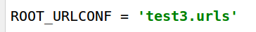
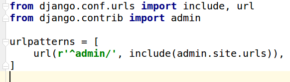
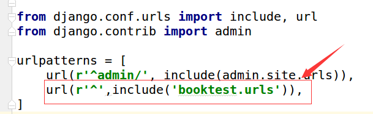
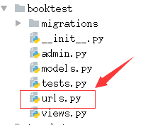
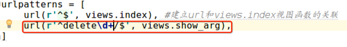
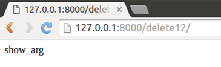
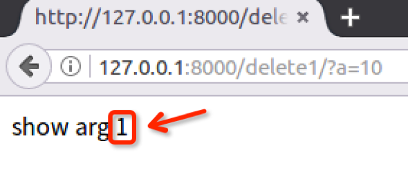
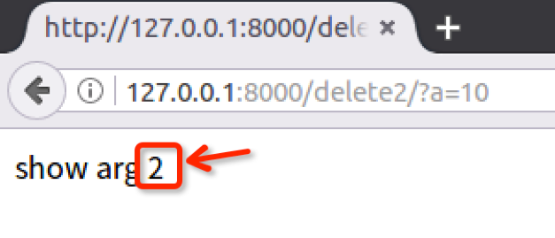

URLconf
用户通过在浏览器的地址栏中输入网址请求网站，对于Django开发的网站，由哪一个视图进行处理请求，是由url匹配找到的。
配置
1）在test3/settings.py中通过ROOT_URLCONF指定url配置，默认已经有此配置。

2）打开test3/urls.py可以看到默认配置。

注意点
- 在test3/urls.py中进行包含配置，在各自应用中创建具体配置。
- 定义urlpatterns列表，存储url()对象，这个名称是固定的。
urlpatterns中的每个正则表达式在第一次访问它们时被编译，这使得运行很快。
语法
url()对象，被定义在django.conf.urls包中，有两种语法结构：
语法一：包含，一般在自定义应用中创建一个urls.py来定义url。
这种语法用于test3/urls.py中，目的是将应用的urls配置到应用内部，数据更清晰并且易于维护。
url(正则,include('应用.urls'))
1）如示例在test3/urls.py文件，包含booktest中的urls。
url(r'^',include('booktest.urls')),

2) 如示例在booktest目录下创建urls.py文件。

语法二：定义，指定URL和视图函数的对应关系。
在应用内部创建urls.py文件，指定请求地址与视图的对应关系。
url(正则,'视图函数名称')
1）如示例在booktest/urls.py中创建首页的url，代码如下
from django.conf.urls import url
from booktest import views
urlpatterns=[
url(r'^$',views.index),
]
2）如示例在booktest/views.py中创建视图index
from django.shortcuts import render
from django.http import HttpResponse
def index(request):
return HttpResponse("视图函数index")
说明1：正则部分推荐使用r，表示字符串不转义，这样在正则表达式中使用\只写一个就可以。 说明2：不能在开始加反斜杠，推荐在结束加反斜杠。
正确：index/
正确：index
错误：/index
错误：/index/
获取值
请求的url被看做是一个普通的python字符串，进行匹配时不包括域名、get或post参数。 如请求地址如下：
http://127.0.0.1:8000/delete1/?a=10
1）去除掉域名和参数部分，并将最前面的/去除后，只剩下如下部分与正则匹配。
delete1/
2）打开booktest/urls.py文件，定义与这个地址匹配的url如下：
url(r'^delete\d+/$',views.show_arg),

3）在booktest/views.py中创建视图show_arg。
def show_arg(request):
return HttpResponse('show_arg')
4）启动服务器，输入上面的网址，浏览器中效果如下图。

可以在匹配过程中从url中捕获参数，每个捕获的参数都作为一个普通的python字符串传递给视图。
获取值需要在正则表达式中使用小括号，分为两种方式：
- 位置参数
- 关键字参数
注意：两种参数的方式不要混合使用，在一个正则表达式中只能使用一种参数方式。
方式一：位置参数
直接使用小括号，通过位置参数传递给视图。
1）为了提取参数，修改上面的正则表达式如下：
url(r'^delete(\d+)/$',views.show_arg),
2）修改视图show_arg如下：
注意：参数的名字是任意的如a1、b8，尽量做到见名知意。
def show_arg(request,id):
return HttpResponse('show arg %s'%id)
3）刷新浏览器页面，效果如下图：

4）在地址栏输入如下地址：
http://127.0.0.1:8000/2/?a=10
5）浏览器页面效果如下图

方式二：关键字参数
在正则表达式部分为组命名。
1）修改正则表达式如下：
其中?P
部分表示为这个参数定义的名称为id，可以是其它名称，起名做到见名知意。
url(r'^delete(?P<id1>\d+)/$',views.show_arg),
2）修改视图show_arg如下：
注意：视图show_arg此时必须要有一个参数名为id1，否则报错。
def show_arg(request,id1):
return HttpResponse('show %s'%id1)
3）刷新浏览器页面，效果如下图
